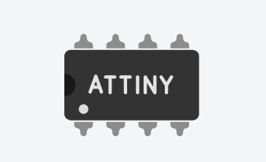
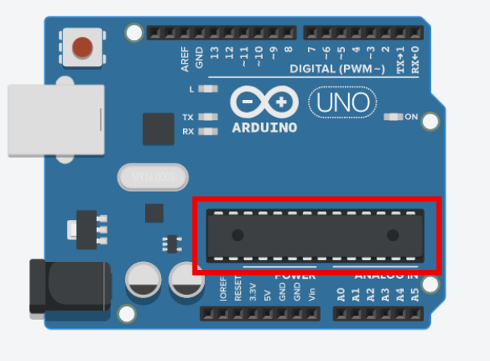
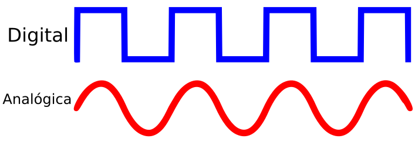

¡Bienvenidos a un mundo de comodidad y tecnología en tus propias manos! En la actualidad, nuestras casas están experimentando una transformación impresionante gracias a la domótica. ¿Te has preguntado alguna vez qué significa ese término? ¡No te preocupes! En esta introducción, descubriremos juntos qué es la domótica y cómo está cambiando la forma en que vivimos.
Además estudiaremos los componentes necesarios para poder controlar todos nuestros elementos del hogar: las placas robótica.
1. El cerebro que lo controla todo
Los microcontroladores son pequeños dispositivos electrónicos que integran en un solo chip un procesador, memoria y periféricos, diseñados para controlar y ejecutar tareas específicas. Son el corazón de numerosos sistemas y dispositivos electrónicos que utilizamos en nuestra vida diaria.
Estos diminutos pero poderosos componentes son utilizados en una amplia variedad de aplicaciones, desde electrodomésticos inteligentes hasta automóviles, desde dispositivos médicos hasta drones. Los microcontroladores se encargan de gestionar y controlar diferentes funciones dentro de estos sistemas, como la lectura de sensores, el procesamiento de datos y la actuación sobre actuadores.
¿Cómo es un microcontrolador?
Por su forma, un microcontrolador es una pastilla con una serie de patas o conexiones. Suelen venir integradas en la placa robótica durante el proceso de fabricación.

El microcontrolador de Arduino
Podemos localizar de forma sencilla el microcontrolador de Arduino tal y como muestra la siguiente imagen.

¿Cómo funciona un microcontrolador?
Microcontrolador VS Microprocesador
¿Necesitas ayuda?
Te presento a una conocida de cursos anteriores, la placa microbit. De esta forma comprenderás que la placa arduino es similar a ella.
2. Adivina adivinanza
2
Completa las letras que faltan para resolver la adivinanza.
Su navegador no es compatible con esta herramienta.
3. Señales analógicas y señales digitales
En el mundo de la electrónica, existen dos tipos de señales fundamentales: las señales analógicas y las señales digitales. Estas señales son utilizadas para transmitir información y datos en diferentes sistemas electrónicos. A continuación, te explicaré las diferencias clave entre ellas.
Señales analógicas
Una señal analógica es una representación continua de una cantidad física, como el sonido o el voltaje. En una señal analógica, los valores pueden variar suavemente y de manera infinita en un rango determinado. Por ejemplo, si observamos una onda de sonido en un osciloscopio, veríamos una forma de onda continua y suave, sin interrupciones. Las señales analógicas son captadas y transmitidas de manera continua, sin ninguna interrupción en el tiempo.
Señales digitales
Por otro lado, una señal digital es una representación discreta de la información, que se basa en dígitos binarios, es decir, ceros y unos. En una señal digital, la información se divide en pequeñas unidades llamadas bits. Cada bit puede tener solo dos posibles valores, 0 o 1. Estos valores binarios se utilizan para representar diferentes estados o niveles de información. Por ejemplo, en una señal digital, un valor de 0 podría representar un estado apagado y un valor de 1 podría representar un estado encendido.
Representación

4. Te ayudo a resolver los siguientes ejercicios
La habilidad de ser un buen estratega es fundamental para alcanzar nuestras metas. Implica contar con estrategias, técnicas y "trucos" que nos permitan llegar más rápido y de manera más fácil a donde deseamos.
Ahora te voy a enseñar una estrategia, ¡Aprovéchala para alcanzar tu reto!
¿Quieres que te enseñe "trucos" para realizar un esquema.